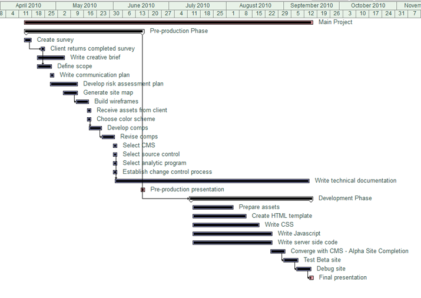
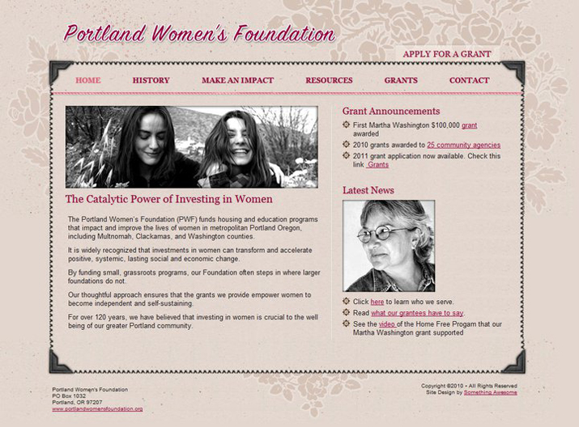
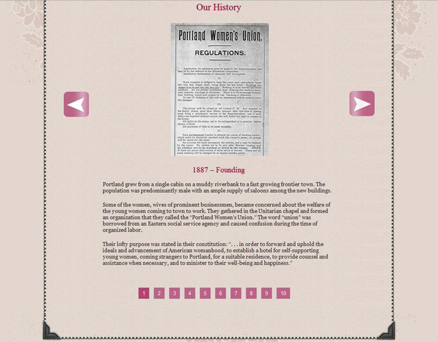

-

This project was carried out by a 5 person team that I led. Here's a Gannt chart for the project.
-

The client was a nonprofit who needed a more cotemprary presence that they could also use to manage their grant requests.
-

A jQuery slider takes visitors through the foundation's history. The site is located here.